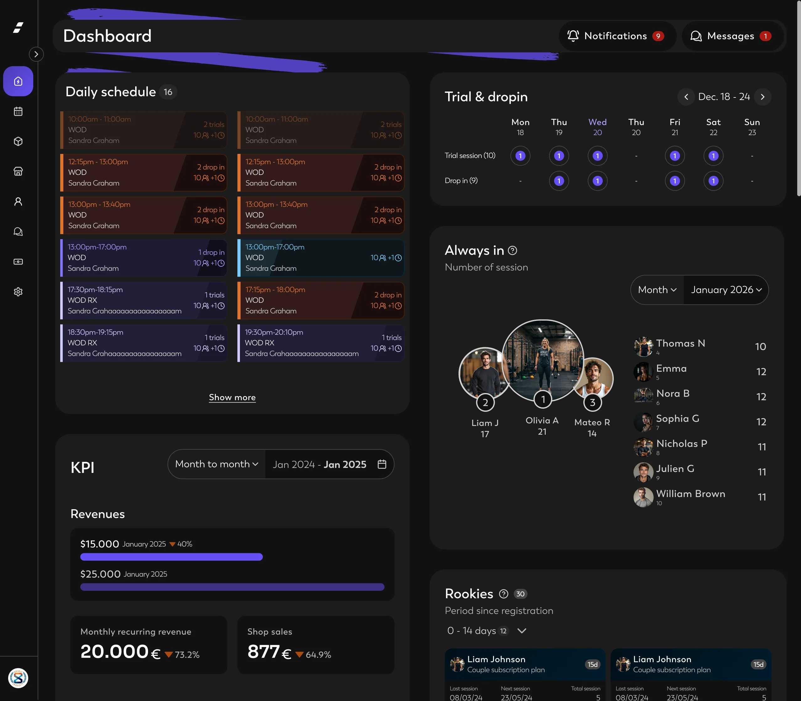
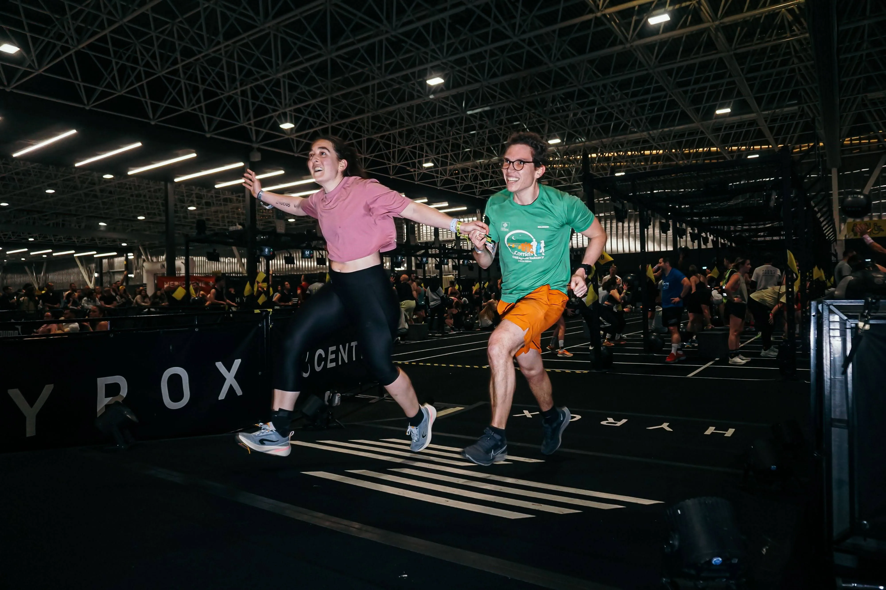

Benjamin Saint-Sever.
Je dessine des interfaces B2B là où la donnée est dense et l'enjeu concret : design systems, dashboards, outils métier. Et je raconte chaque projet par l'arbitrage qui l'a façonné.
Sept ans sur des produits B2B exigeants. Ici, pas de métriques cosmétiques : chaque étude se lit en quatre temps : le problème, ce que j'ai fait, l'arbitrage, le résultat.
Workflow assisté par IA
Une conception accélérée par l'IA, mais toujours ancrée sur le design system.
Interfaces denses en données
Dashboards opérateurs et vues métier qui restent lisibles malgré la densité.
Design systems de bout en bout
Des tokens sémantiques à la documentation, multi-public et multi-thème.
Collaboration avec les devs
Jusqu'à l'intégration, via un système de tokens commun design ↔ code.
Travail sélectionné
4 PROJETS · 9 ÉTUDES
★ PROJET PHARE · SPORTHustle Up
Produit multi-public (athlète, coach, owner). Le terrain où j'ai greffé un workflow IA sur le design system et conçu des dashboards opérateurs.
4 ÉTUDESCe qui fait un projet, ce n'est pas l'écran final. C'est l'arbitrage qu'on a osé trancher.
Le problème
Comprendre le terrain avant l'écran : qui décide, avec quelles données, sous quelles contraintes.
Ce que j'ai fait
Explorer plusieurs pistes, prototyper vite, confronter aux utilisateurs dès que possible.
L'arbitrage
Nommer la tension, choisir un camp, et pouvoir défendre ce choix devant l'équipe.
Le résultat
Vérifier ce que la décision produit en réel, et retirer ce qui ne sert pas.
À propos
BENJAMIN SAINT-SEVER7 ans à concevoir des produits B2B exigeants : design systems, interfaces denses, dashboards opérateurs. J'aime les problèmes bien posés et les décisions qu'on peut défendre.
En dehors de l'écran, j'apprends en faisant : un CAP cuisine par passion, des dossards Hyrox. Et le cinéma, que je regarde un peu en designer : la mise en scène, le rythme, l'ambiance sonore, comment tout sert l'intention.
